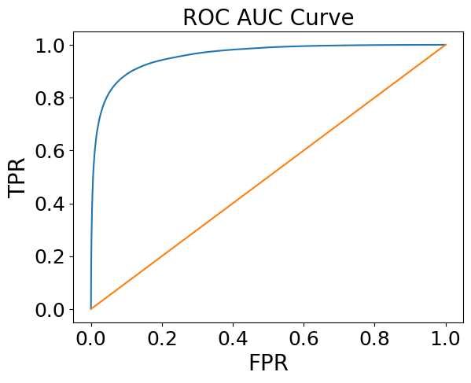

Tight cuts
n0 > 2 + disp 2/8; disp < 4; chi2/npe0 < 10; E/p > 0.8; prob > 0.01
Electron/Hadron Separation Using ML & BDT Results
Boosted Decision Tree
1B pi simulation and 100M electron simulation
Using all mentioned variables + pT and centrality
BDT Results:
Loose cut: +15% electron efficiency, -15% hadron contamination compared to the default cut
Default cut: same electron efficiency, -40% hadron contamination compared to the default cut
Tight cut: -20% electron efficiency, -95% hadron contamination compared to the default cut
